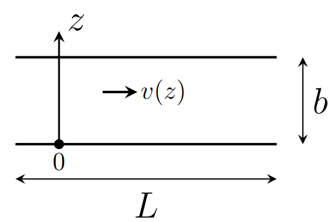
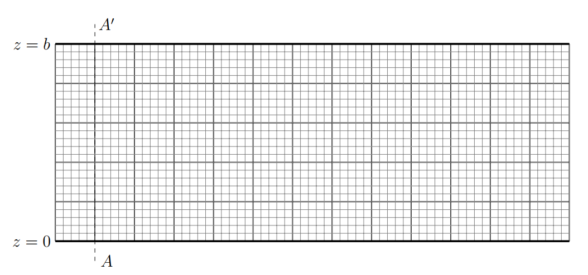
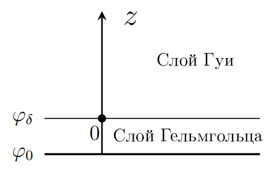
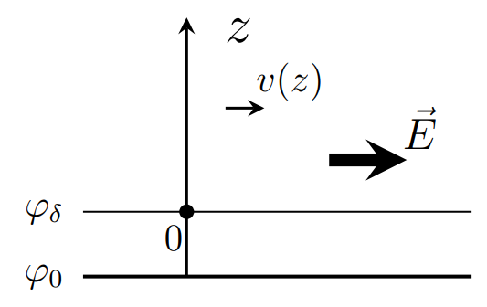

X23 (2023) — English translation
In the 90s of the last century, technology was developed that makes it possible to create and control extremely small fluid flows contained in a limited space (characteristic dimensions less than a millimeter). This technology is called microfluidics. With its help, in particular, it is possible to build a laboratory-on-chip, where in capillary systems you can mix and separate reagents, influence different parts of the chip with temperature, current and other parameters. As a result, this allows the use of reagents in very small quantities, which significantly reduces the cost of development processes, especially in the chemistry of modern drugs.
Real capillaries have a round or square/rectangular cross-section. However, in this problem, for simplicity of calculations, we will consider a rectangular capillary with transverse dimensions $a$ and $b$ ($a \gg b$) and length $L$ ($L \gg a$). Such a capillary is filled with water, and a pressure difference of $\Delta P$ is applied to its ends.


An electrolyte is a substance that conducts electric current due to dissociation into ions, which occurs in solutions. When two phases come into contact, one of which is liquid, an electric double layer (EDL) appears - a layer of ions formed on the surface of a solid as a result of the adsorption of ions from a solution, the dissociation of a surface compound, or the orientation of polar molecules at the phase interface. According to modern theory, the DES structure consists of two layers: Helmholtz layer or adsorption layer adjacent directly to the interphase surface (stationary); Gouy's layer or diffuse layer in which electrolyte ions of both signs are located.
An electrolyte is a substance that conducts electric current due to dissociation into ions, which occurs in solutions. When two phases come into contact, one of which is liquid, an electric double layer (EDL) appears - a layer of ions formed on the surface of a solid as a result of the adsorption of ions from a solution, the dissociation of a surface compound, or the orientation of polar molecules at the phase interface. According to modern theory, the structure of the DES consists of two layers:

The electrical characteristic of an electric double layer is the potential, and in this part of the problem you need to find its characteristic appearance near one flat surface of the capillary wall in the presence of an electrolyte. We will assume that the electrolyte itself is electrically neutral, and the cations and anions have charges $+e$ and $-e$, respectively. The concentration of each type of ion away from the walls is $n_0$. The dielectric constant of the electrolyte is $\varepsilon$, its viscosity is $\eta$. Let the potential in the volume of the electrolyte be zero. Let us apply some potential $\varphi_0$ to the capillary wall. Due to the effects occurring in the Helmholtz layer, the potential at the boundary of this layer will become $\varphi_\delta$. We will not further consider the processes occurring in the Helmholtz layer, so we can assume that the potential at the capillary boundary is equal to $\varphi_\delta$. The $z$ axis is directed perpendicular to the capillary boundary, the origin of coordinates is on the boundary.
Electrolyte ions move under the influence of a field in a viscous medium. Consider the resistance force to be proportional to the speed $\vec f=-\alpha \vec v$.
At equilibrium, the ion flux caused by the field must be balanced by the reverse flux due to the concentration difference (diffusion), so that the total flux is zero. The diffusion flow is described by Fick's law: $$ j=-D\cfrac{dn}{dz}, $$ где $j$ – количество частиц, пересекающих единичную площадку в единицу времени, $n$ – концентрация, $D$ – коэффициент диффузии, который для приведенной модели вязкой среды, описывается законом Эйнштейна-Смулоховского $D= kT/\alpha$ ($\alpha$ – тот же коэффициент, что и в силе сопротивления, $k$ – постоянная Больцмана, $T$ – absolute temperature).
In all the following points, also always use the $e \varphi \ll kT$ approximation.
In Part B it was shown that there is an uncompensated space charge near the capillary wall. Now, if you apply an electric field along the capillary, the ions will move, drawing the surrounding liquid with them. Of course, the applied field must be small so that its contribution to the change in potential $\varphi(z)$ can be neglected. In this part, it is not necessary to take into account the pressure difference $\Delta P$, which was discussed earlier.

Liquid movement in microfluidics occurs in thin capillaries and at low speeds and is thus generally laminar. In conventional macroscopic pipes, mixing of liquids occurs mainly due to turbulent phenomena. Accordingly, in microfluidics, mixing of liquids is a significant problem.
Source: https://pho.rs/p/2846